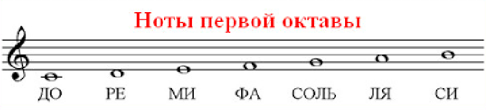
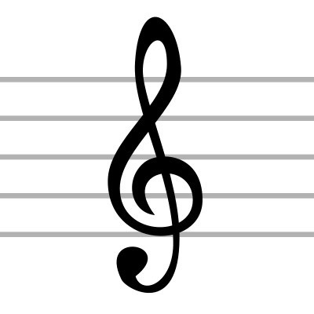

Урок 2. Ноты первой октавы. Скрипичный ключ.
Теория
В первой октаве располагаются ноты: До, Ре, Ми, Фа, Соль, Ля, Си. Эти ноты часто используются в детских песнях и упражнениях для начинающих музыкантов.
- Скрипичный ключ (ключ Соль) обозначает, что вторая линия нотного стана — это нота Соль первой октавы.
- Ноты первой октавы записываются на нотном стане, начиная с дополнительной нижней линейки (для ноты До) и заканчивая третьей линейкой (для ноты Си).
Скрипичный ключ помогает музыкантам быстро ориентироваться в расположении нот на нотном стане.
Запомните порядок нот первой октавы: До, Ре, Ми, Фа, Соль, Ля, Си. После Си снова идёт До, но уже второй октавы.
Ноты первой октавы звучат выше нот малой октавы и ниже нот второй октавы.
Упражнения
- Распознавание ноты: Определите, какая нота изображена на нотном стане (Нота на второй линии — это Соль; Нота на первой добавочной нижней линии — это До; Нота на третьей линии — это Си).
- Пение: Пропойте ноты первой октавы вверх и вниз (До, Ре, Ми, Фа, Соль, Ля, Си).
Аудио-примеры
Звучание нот первой октавы:
Пение звукоряда первой октавы:
Визуальные примеры
Ноты первой октавы на нотном стане:

Скрипичный ключ:
